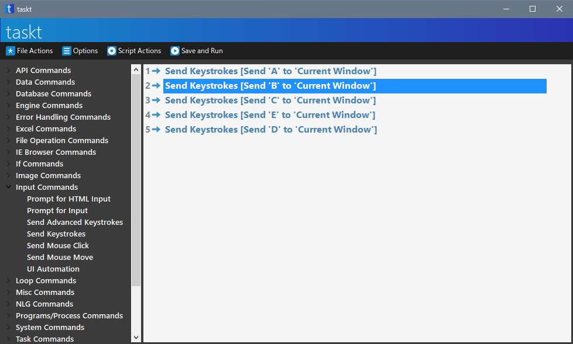
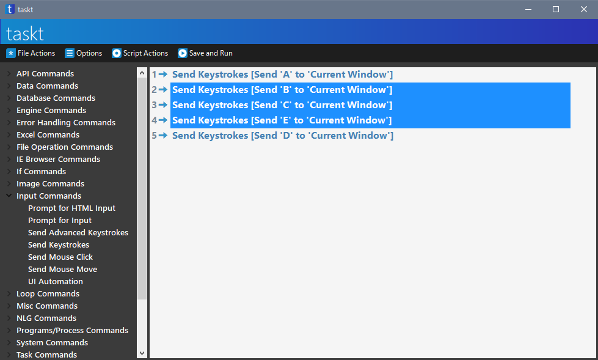

複数の命令を選択する
たとえば複数の命令をまとめて移動させたり、削除したいときはマウスとキーボードを併用して命令を選択します。
○○から××まで
○○の命令から××の命令までをまとめて選択したい場合は、Shift を使います。
例えば、下のスクリプトで、2 行目の Send Keystrokes [Send 'B' to…… から 4 行目の Send Keystorkes [Send 'E' to…… までを選択したい場合、上の Send Keystrokes [Send 'B' to…… をクリックします。

次に、Shift を押しながら、Send Keystrokes [Send 'E' to…… をクリックします。
すると、2 行目から 4 行目のすべての命令をまとめて選択できます。

ちなみに、逆向きで 4 行目をはじめに選択し、次に Shift を押しながら 2 行目の選択しても同じです。
○○と××を選択
とびとびの命令をまとめて選択するときは、Ctrl を使います。
例えば、下のスクリプトで、2 行目の Send Keystrokes [Send 'B' to…… と 4 行目の Send Keystorkes [Send 'E' to…… の 2 つを選択したい場合、まず Send Keystrokes [Send 'B' to…… をクリックします。
次に、Ctrl を押しながら、Send Keystrokes [Send 'E' to…… をクリックします。
すると、2 行目と 4 行目の命令をまとめて選択できます。

この操作も上の命令から順番に選択する必要はなく、Ctrl を押しながら好きな順番で選択してよいです。